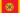

这是ParaTranz汉化包中的.yml文本。
文化译名
本地化代码位于：
- /Europa Universalis IV/mod/eu4_chinese/localisation/EU4_l_english.yml。
- /Europa Universalis IV/mod/eu4_chinese/localisation/text_l_english.yml。
- /Europa Universalis IV/mod/eu4_chinese/localisation/aow_l_english.yml。
- /Europa Universalis IV/mod/eu4_chinese/localisation/cultures_phase4_l_english.yml。
- /Europa Universalis IV/mod/eu4_chinese/localisation/manchu_l_english.yml。
- /Europa Universalis IV/mod/eu4_chinese/localisation/emperor_content_l_english.yml。
- /Europa Universalis IV/mod/eu4_chinese/localisation/emperor_map_l_english.yml。
日耳曼 文化组
波美拉尼亚 文化的原生国家是 波美拉尼亚
波美拉尼亚普鲁士 文化的原生国家是 普鲁士
普鲁士下萨克森 文化的原生国家是 汉诺威
汉诺威威斯特伐利亚 文化的原生国家是 威斯特伐利亚
威斯特伐利亚莱茵 文化的原生国家是 黑森
黑森萨克森 文化的原生国家是 萨克森
萨克森法兰克尼亚 文化的原生国家是 法兰克尼亚
法兰克尼亚施瓦本 文化的原生国家是 施瓦本
施瓦本瑞士 文化的原生国家是 瑞士
瑞士巴伐利亚 文化的原生国家是 巴伐利亚
巴伐利亚奥地利 文化的原生国家是 奥地利
奥地利荷兰 文化的原生国家是 尼德兰
尼德兰佛兰德 文化的原生国家是 佛兰德
佛兰德弗里斯兰 文化的原生国家是 弗里斯兰
弗里斯兰
北欧 文化组
不列颠 文化组
凯尔特 文化组
拉丁 文化组
伦巴第 文化的原生国家是 米兰
米兰托斯卡纳 文化的原生国家是 托斯卡纳
托斯卡纳撒丁尼亚 文化的原生国家是 撒丁
撒丁罗马涅 文化的原生国家是 费拉拉
费拉拉利古里亚 文化的原生国家是 热那亚
热那亚威尼斯 文化的原生国家是 威尼斯
威尼斯达尔马提亚 文化的原生国家是 达尔马提亚
达尔马提亚那不勒斯 文化的原生国家是 那不勒斯
那不勒斯皮埃蒙特 文化的原生国家是 萨伏依
萨伏依翁布里亚 文化的原生国家是 乌尔比诺
乌尔比诺西西里 文化的原生国家是 西西里
西西里马耳他 文化的原生国家是 马耳他
马耳他
伊比利亚 文化组
卡斯蒂利亚 文化的原生国家是 卡斯蒂利亚
卡斯蒂利亚墨西哥 文化的原生国家是 墨西哥
墨西哥莱昂 文化的原生国家是 莱昂
莱昂阿拉贡 文化的原生国家是 阿拉贡
阿拉贡加泰罗尼亚 文化的原生国家是 加泰罗尼亚
加泰罗尼亚加利西亚 文化的原生国家是 加利西亚
加利西亚安达卢西亚 文化的原生国家是 格拉纳达
格拉纳达葡萄牙 文化的原生国家是 葡萄牙
葡萄牙巴西 文化的原生国家是 巴西
巴西巴斯克 文化的原生国家是 纳瓦拉
纳瓦拉
法兰西 文化组
法兰西 文化的原生国家是 法兰西
法兰西加斯科涅 文化的原生国家是 加斯科涅
加斯科涅诺曼 文化的原生国家是 诺曼底
诺曼底阿基坦 文化的原生国家是 图卢兹
图卢兹勃艮第 文化的原生国家是 勃艮第
勃艮第欧西坦 文化的原生国家是 普罗旺斯
普罗旺斯瓦隆 文化的原生国家是 埃诺
埃诺布列塔尼 文化的原生国家是 布列塔尼
布列塔尼
乌戈尔 文化组
乌拉尔 文化的原生国家是 彼尔姆
彼尔姆萨莫耶德 文化奥斯蒂亚克 文化英格里亚 文化
南斯拉夫 文化组
克罗地亚 文化的原生国家是 克罗地亚
克罗地亚塞尔维亚 文化的原生国家是 塞尔维亚
塞尔维亚斯洛文尼亚 文化的原生国家是 采列
采列波斯尼亚 文化的原生国家是 波斯尼亚
波斯尼亚保加利亚 文化的原生国家是 保加利亚
保加利亚阿尔巴尼亚 文化的原生国家是 阿尔巴尼亚
阿尔巴尼亚
西斯拉夫 文化组
喀尔巴阡 文化组
东斯拉夫 文化组
莫斯科 文化的原生国家是 莫斯科
莫斯科诺夫哥罗德 文化的原生国家是 诺夫哥罗德
诺夫哥罗德梁赞 文化的原生国家是 梁赞
梁赞白俄罗斯 文化的原生国家是 波洛茨克
波洛茨克鲁塞尼亚 文化的原生国家是 基辅
基辅卡累利阿 文化的原生国家是 卡累利阿
卡累利阿
波罗的 文化组
拜占庭 文化组
高加索 文化组
黎凡特 文化组
突厥 文化的原生国家是 奥斯曼
奥斯曼埃及 文化的原生国家是 马穆鲁克
马穆鲁克叙利亚 文化的原生国家是 叙利亚
叙利亚马什里克 文化的原生国家是 伊拉克
伊拉克海利季 文化的原生国家是 哈萨
哈萨贝都因 文化的原生国家是 内志
内志马赫里 文化的原生国家是 迈赫拉
迈赫拉汉志 文化的原生国家是 汉志
汉志阿曼 文化的原生国家是 阿曼
阿曼也门 文化的原生国家是 亚丁
亚丁
马格里布 文化组
伊朗 文化组
波斯 文化的原生国家是 波斯
波斯卢日 文化的原生国家是 洛雷斯坦
洛雷斯坦阿塞拜疆 文化的原生国家是 阿尔达比勒
阿尔达比勒呼罗珊 文化的原生国家是 呼罗珊
呼罗珊俾路支 文化的原生国家是 俾路支斯坦
俾路支斯坦阿富汗 文化的原生国家是 阿富汗
阿富汗库尔德 文化的原生国家是 阿达兰
阿达兰马赞德兰 文化的原生国家是 马赞德兰
马赞德兰
阿尔泰 文化组
蒙古 文化的原生国家是 蒙古
蒙古科尔沁 文化的原生国家是 科尔沁
科尔沁喀尔喀 文化的原生国家是 喀尔喀
喀尔喀瓦剌 文化的原生国家是 准噶尔
准噶尔乌兹别克 文化的原生国家是 乌兹别克
乌兹别克土库曼 文化的原生国家是 希瓦
希瓦维吾尔 文化的原生国家是 叶尔羌
叶尔羌哈萨克 文化的原生国家是 哈萨克
哈萨克吉尔吉斯 文化的原生国家是 察合台
察合台
中美洲 文化组
干旱美洲 文化组
玛雅 文化组
尤卡坦 文化的原生国家是 休
休普屯 文化的原生国家是 伊察
伊察玛雅 文化的原生国家是 玛雅
玛雅高地玛雅 文化的原生国家是 基切
基切拉坎东 文化的原生国家是 乔齐尔
乔齐尔瓦斯特克 文化的原生国家是 瓦斯特克
瓦斯特克琼塔莱斯 文化的原生国家是 约科坦
约科坦
欧托曼格 文化组
安第斯 文化组
图皮 文化组
热 文化组
马拉尼翁 文化组
希瓦罗 文化查查波亚 文化的原生国家是 查查波亚
查查波亚
奇布查 文化组
马塔科 文化组
查科 文化
阿洛柯 文化组
马普切 文化的原生国家是 马普切
马普切巴塔哥尼亚 文化海特 文化瓦尔佩 文化
加勒比 文化组
爱斯基摩阿留申 文化组
阿留申 文化因纽特 文化
中阿尔冈昆 文化组
平原阿尔冈昆 文化组
东阿尔冈昆 文化组
特拉华 文化的原生国家是 莱纳佩
莱纳佩阿布纳基 文化的原生国家是 阿布纳基
阿布纳基米克马克 文化的原生国家是  米克马克莫希干 文化的原生国家是 莫希干
莫希干伯瓦坦 文化的原生国家是 波瓦坦
波瓦坦皮科特 文化的原生国家是 佩科特
佩科特
易洛魁 文化组
苏 文化组
卡多 文化组
穆斯科基 文化组
索诺拉 文化组
阿帕奇 文化组
纳－德内 文化组
奇帕维安 文化海达 文化的原生国家是 海达
海达阿塔巴斯坎 文化
佩钮蒂 文化组
中华 文化组
满洲 文化的原生国家是 满洲
满洲直隶 文化的原生国家是 燕
燕苗 文化的原生国家是 苗
苗粤 文化的原生国家是 越
越晋 文化的原生国家是 晋
晋吴 文化的原生国家是 吴
吴闽 文化的原生国家是 闽
闽客家 文化的原生国家是 淮
淮赣 文化的原生国家是 宁
宁湘 文化的原生国家是 楚
楚蜀 文化的原生国家是 蜀
蜀江淮 文化的原生国家是 大明
大明西北 文化的原生国家是 大顺
大顺鄂 文化的原生国家是 大西
大西中原 文化的原生国家是 梁
梁鲁 文化的原生国家是 齐
齐
朝鲜 文化组
朝鲜 文化的原生国家是 朝鲜
朝鲜
日本 文化组
藏 文化组
马来 文化组
波利尼西亚 文化占 文化的原生国家是 占婆
占婆马来亚 文化的原生国家是 马六甲
马六甲苏门答腊 文化的原生国家是 亚齐
亚齐爪哇 文化的原生国家是 满者伯夷
满者伯夷菲律宾 文化的原生国家是 苏禄
苏禄婆罗洲 文化的原生国家是 文莱
文莱马达加斯加 文化苏拉威西 文化的原生国家是 望加锡
望加锡
东南亚 文化组
缅甸 文化组
太平洋 文化组
巴布亚 文化澳洲原住民 文化美拉尼西亚 文化摩鹿加 文化的原生国家是 特尔纳特
特尔纳特
东雅利安 文化组
阿萨姆 文化的原生国家是 阿萨姆孟加拉 文化的原生国家是 孟加拉
孟加拉科奇 文化的原生国家是 科奇
科奇比哈尔 文化的原生国家是 蒂鲁德
蒂鲁德帕哈里 文化的原生国家是 加瓦尔
加瓦尔尼泊尔 文化的原生国家是 尼泊尔
尼泊尔奥里萨 文化的原生国家是 奥里萨
奥里萨僧伽罗 文化的原生国家是 科特
科特
印度斯坦 文化组
西雅利安 文化组
达罗毗荼 文化组
中印度 文化组
曼德 文化组
萨赫勒 文化组
西非 文化组
南非 文化组
刚果 文化组
隆达 文化的原生国家是 隆达
隆达卢巴 文化的原生国家是 卢巴
卢巴刚果 文化的原生国家是 刚果
刚果雅卡 文化的原生国家是 雅卡
雅卡库巴 文化的原生国家是 库巴
库巴姆本杜 文化的原生国家是 恩东戈
恩东戈绍奎 文化的原生国家是 绍奎
绍奎姆班加拉 文化的原生国家是 卡桑吉
卡桑吉朱昆 文化萨瓦班图 文化
大湖地区 文化组
东班图 文化组
库希特 文化组
索马里 文化的原生国家是 阿达尔
阿达尔哈勒尔 文化的原生国家是 哈勒尔
哈勒尔阿法尔 文化的原生国家是 奥萨
奥萨奥罗莫 文化的原生国家是 吉马
吉马蒂格雷 文化的原生国家是 梅德利巴赫里锡达莫 文化的原生国家是 咖法
咖法阿姆哈拉 文化的原生国家是 埃塞俄比亚
埃塞俄比亚
苏丹 文化组
鄂温克 文化组
堪察加 文化组
鞑靼 文化组
阿斯特拉罕 文化的原生国家是 阿斯特拉罕
阿斯特拉罕巴什基尔 文化的原生国家是 巴什基尔
巴什基尔克里米亚 文化的原生国家是 克里米亚
克里米亚喀山 文化的原生国家是 喀山
喀山米萨鞑靼 文化的原生国家是 大帐
大帐诺盖 文化的原生国家是 诺盖
诺盖西伯利亚 文化的原生国家是 西伯利亚
西伯利亚
失落的文化 文化组
亚特兰蒂斯 文化斯巴达 文化雅典 文化古埃及 文化罗马 文化扬马延 文化普鲁西尼亚 文化腓尼基 文化斯堪尼亚 文化盎格鲁-撒克逊 文化巴比伦 文化伊特鲁里亚 文化帕提亚 文化阿拉姆 文化希伯莱 文化斯基泰 文化
参考资料
- EU4 汉化，由 52 汉化组与云汉化平台 ParaTranz 联合出品，基于 CC BY-NC-SA 4.0 许可协议。